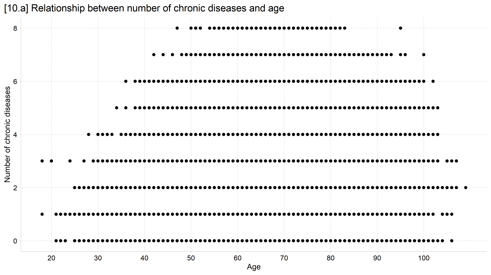

library(foreign) # load Stata datasets
library(ggplot2) # main graphics package
library(dplyr) # data manipulation tools
library(cleanplots) # Mize's graphics scheme
## Use cleanplots colors, markers, lines, and theme for all graphs ##
cleanplots_defaults()
theme_update(plot.title.position = "plot") # titles start at left edge of graph
# Health and Retirement Study Data
hrs <- read.dta("https://tdmize.github.io/data/data/hrs_si.dta")
# 10.a - Basic scatterplot doesn't work because of overlapping data points
ggplot(hrs, aes(x = age, y = dzcount)) +
geom_point() +
labs(x = "Age",
y = "Number of chronic diseases",
title = "[10.a] Relationship between number of chronic diseases and age") +
scale_x_continuous(breaks = seq(20, 100, 10))